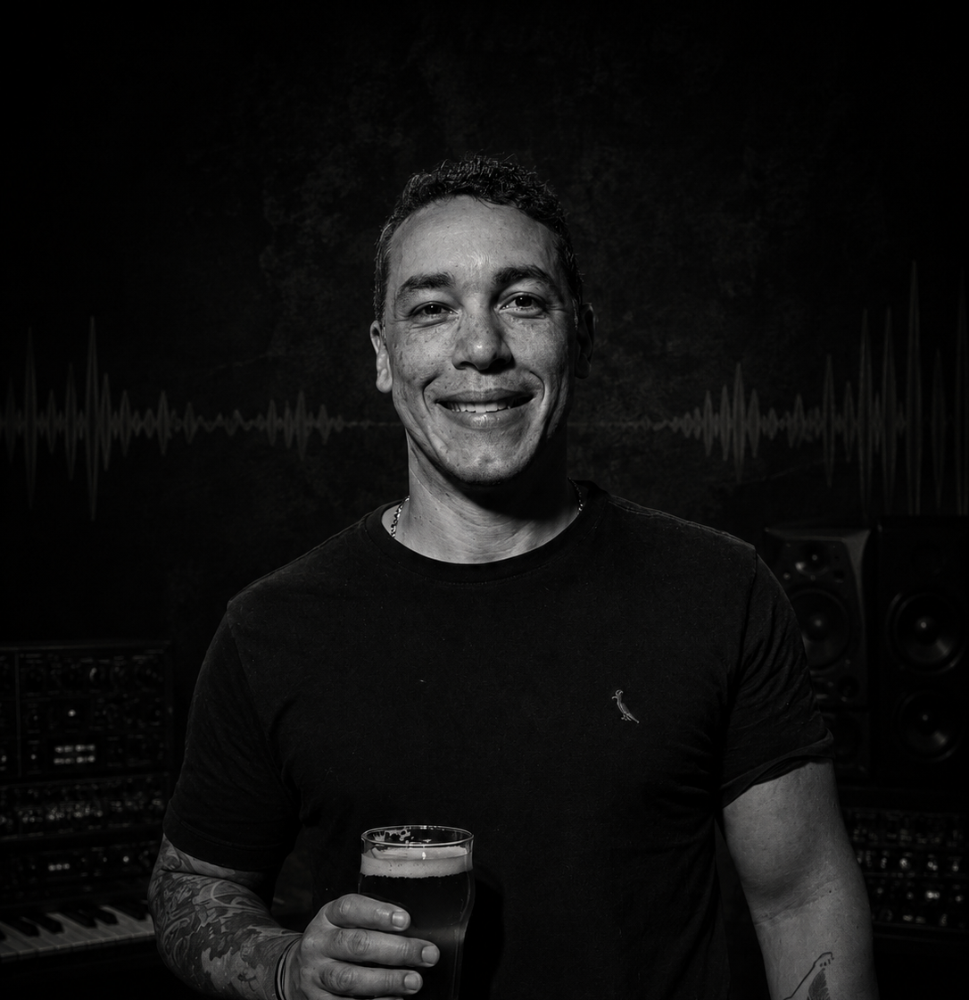
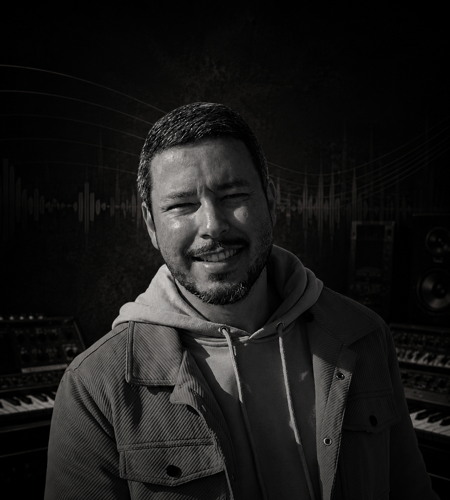

A história por trás das melodias
Desde criança envolvido com a música, Rafael desenvolveu seu talento de forma natural, encontrando nas composições uma forma única de expressar seus sentimentos. Sua sensibilidade melódica e domínio da harmonia são marcas inconfundíveis de seu trabalho.
Erick cresceu imerso no universo musical ao lado do irmão. Com olhar poético e criativo, transforma palavras em versos que tocam a alma. Seu estilo lírico e sua capacidade de contar histórias através da música são sua maior marca.
Unidos pelo sangue e pela paixão pela música, Rafael e Erick Moreira formam uma dupla de compositores que alia talento individual e sinergia familiar para criar canções autênticas e emocionantes. Juntos, os irmãos Moreira constroem um legado musical que reflete suas vivências, seus sonhos e a profundidade do vínculo que os une. Cada composição carrega um pedaço de suas histórias e o desejo de tocar corações por onde a música chegar.
Nossa discografia — ouça e leia as letras
Músicas criadas em colaboração com artistas especiais
Melodias que nascem do coração e tocam a alma
Milton Nascimento é a grande estrela-guia de Rafael. A forma como Milton transita entre o sagrado e o cotidiano, entre a voz e o silêncio, moldou profundamente a sensibilidade harmônica de Rafael. Além de Milton, Djavan e Ivan Lins também deixaram marcas indeléveis no seu jeito de compor.
Fora da música, Rafael é um leitor voraz — especialmente de literatura brasileira e filosofia. Tocar violão sozinho nas madrugadas é outro ritual sagrado. Diz que as melhores melodias aparecem quando o mundo inteiro está dormindo e só ele e as estrelas estão acordados.
Rafael cresceu ouvindo o rádio ligado na cozinha da sua avó no Rio de Janeiro. Com sete anos, encontrou um violão velho encostado num canto da sala e, sem que ninguém o ensinasse, começou a dedilhar as mesmas notas que ouvia na televisão. Foi aí que todos perceberam: aquilo não era curiosidade comum.
Aos doze anos já compunha pequenas canções que emocionavam a família nas reuniões de domingo. A música foi deixando de ser passatempo e tornando-se destino. Estudou harmonia por conta própria, ouviu discos até o vinil gastar, e transformou cada sentimento em acorde. A parceria com o irmão Erick veio naturalmente — dois mundos que sempre foram um só.
Palavras que viram versos, versos que viram canções
Caetano Veloso é para Erick o que o dicionário é para um escritor — a fonte inesgotável. A liberdade poética de Caetano, a forma como ele mistura o popular e o erudito, o moderno e o ancestral, é algo que Erick busca em cada verso que escreve. Zeca Pagodinho e Chico Buarque completam o seu panteão.
Erick é apaixonado por cinema — especialmente o cinema novo brasileiro. Escrever poemas que nunca viram músicas também é um hábito seu. Acredita que um bom letrista precisa viver intensamente antes de escrever. "Não dá pra escrever sobre saudade sem ter sentido saudade de verdade", costuma dizer.
Para Erick, tudo começou com um caderno. Antes mesmo de entender de música, ele já enchia páginas com rimas e histórias. Era a forma que encontrou de processar o mundo ao redor — a saudade do interior dos avós, as brigas de infância, os amores que passavam rápido demais.
Foi quando Rafael começou a pegar esses textos e transformá-los em melodias que Erick entendeu seu verdadeiro chamado: a letra. Juntos, descobriram que Rafael sentia o que Erick escrevia, e Erick escrevia o que Rafael não conseguia dizer em palavras. A dupla nasceu assim — não de um plano, mas de um encontro natural entre dois mundos que sempre estiveram destinados a se completar.